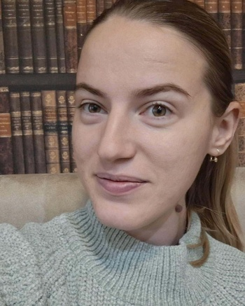

Resume

Zhanna Halitsyna
Personal info
Education
Work experience
- 2022-2025 рр.- Educator in Oleksandrivskyi NVK
- 2016-2018 рр.- Educator in kindergarten No. 93, Odessa
- 2014 р.- Educator in the children's summer complex, Mariupol
Skills
- Knowledge of psychological and pedagogical techniques
- Implementation of modern teaching methods
- Basic PC skills
UA